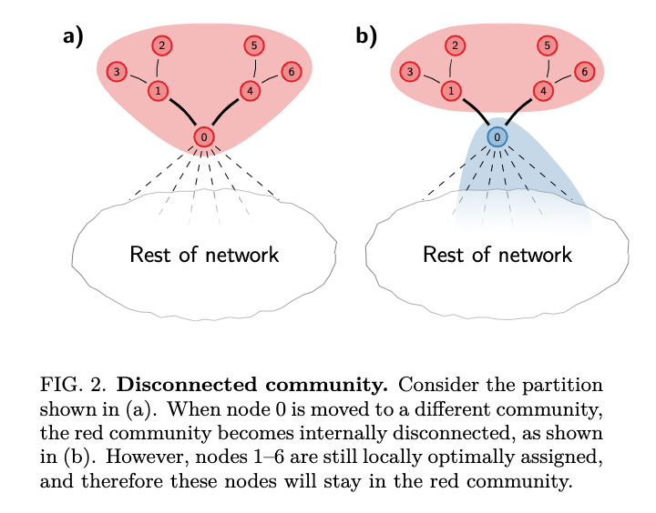

Community detection
A major goal of single-cell analysis is to study the cell-state heterogeneity within a sample by discovering groups within the population of cells. This amounts to a clustering problem, where we aim to learn an optimal set of groups (communities) from the observed data. In single-cell biology we often use graph-based community detection methods to do this, as these methods are unsupervised, scale well, and usually give good results.
The Louvain method for community detection is a popular way to discover communities from single-cell data. We typically reduce the dimensionality of the data first by running PCA, then construct a neighbor graph in the reduced space. Community detection can then be performed using this graph.
Measures of graph structure
To find an optimal grouping of cells into communities, we need some way of evaluating different partitions in the graph. Two ways of doing this are graph modularity (Newman and Girvan 2004) and the constant Potts model (Ronhovde and Nussinov 2010). Each of these can be used as an objective function for graph-based community detection methods, with our goal being to maximize this value.
Modularity
For each community, modularity measures the number of edges within the community and the number of edges going outside the community, and gives a value between -1 and +1. Modularity scores of +1 mean that all the edges in a community are connecting nodes within the community. A score of 0 would mean that the community has half its edges connecting nodes within the same community, and half connecting nodes outside the community. A score of -1 means that there are no edges connecting nodes within the community, and they instead all connect nodes outside the community. Modularity is a popular objective function used with the Louvain method for community detection.
However, modularity suffers from a difficult problem known as the resolution limit (Fortunato and Barthélemy 2007). The resolution limit describes a limitation where there is a minimum community size able to be resolved by optimizing modularity (or other related functions). The minimum resolvable community size depends on the total size of the network and the degree of interconnectedness of the modules. Modules smaller than the minimum size may not be resolved through modularity optimization, even in the extreme case where they are only connected to the rest of the network through a single edge. In practice, this means that small clusters can “hide” inside larger clusters, making their identification difficult.
Constant Potts Model
The constant Potts model (CPM), so called due to the use of a constant value in the Potts model, is an alternative objective function for community detection. CPM has the advantage that it is not subject to the resolution limit. The constant Potts model tries to maximize the number of internal edges in a community, while simultaneously trying to keep community sizes small, and the constant parameter balances these two characteristics. According to CPM, it is better to split into two communities when the link density between the communities is lower than the constant. In this way, the constant acts as a resolution parameter, and setting the constant higher will result in fewer communities. Importantly, the number of communities discovered is related only to the difference in edge density, and not the total number of nodes in the community.
Louvain
As the problem of modularity optimization is NP-hard, we need heuristic methods to optimize modularity (or CPM). The Louvain algorithm is a simple and popular method for community detection (Blondel, Guillaume, and Lambiotte 2008). It was originally developed for modularity optimization, although the same method can be applied to optimize CPM. Louvain has two phases: local moving and aggregation.
Local moving
The Louvain local moving phase consists of the following steps:
- Assign each node to a different community
- For each node i, consider the neighbors j of i and evaluate the increase in modularity that would occur if we moved i into the community of j
- Place node i in the neighboring community that gives the maximal gain in modularity, provided the gain is positive
This process is repeated for every node in the network until no further improvement in modularity is possible. Note that nodes can be revisited several times within a single iteration of the local moving stage, as the possible increase in modularity will change as other nodes are moved to different communities. Importantly, the output of the local moving stage will depend on the order that the nodes are considered in. Once no further increase in modularity is possible by moving any node to its neighboring community, we move to the second phase of the algorithm: aggregation.
Aggregation
In this stage we essentially collapse communities down into a single representative node, creating a new simplified graph. To do this we just sum all the edge weights between nodes of the corresponding communities to get a single weighted edge between them, and collapse each community down to a single new node. Once aggregation is complete we restart the local moving phase, and continue to iterate until everything converges down to one node. This aspect of the Louvain algorithm can be used to give information about the hierarchical relationships between communities by tracking at which stage the nodes in the communities were aggregated.
Improvements on Louvain
The Louvain algorithm guarantees that modularity cannot be increased by merging communities (it finds a locally optimal solution). It does not guarantee that modularity can’t be increased by moving nodes between communities. Louvain can also be quite slow, as it spends a lot of time revisiting nodes that may not have changed neighborhoods.
Smart local moving (SLM)
The smart local moving algorithm (Waltman and Eck 2013) identified another limitation in the original Louvain method: it isn’t able to split communities once they’re merged, even when it may be very beneficial to do so. This is because Louvain only moves individual nodes at a time. The solution proposed in smart local moving is to alter how the local moving step in Louvain works. After running local moving, we end up with a set of communities where we can’t increase the objective function (eg, modularity) by moving any node to any neighboring community. Rather than progress straight to the aggregation stage (as we would for the original Louvain), we next consider each community as a new sub-network and re-apply the local moving step within each community. Any sub-networks that are found are treated as different communities in the next aggregation step. This enables us to find cases where it’s beneficial to split a community.
Random moving
While smart local moving and multilevel refinement can improve the communities found, the next two improvements on Louvain that I’ll discuss focus on the speed/efficiency of the algorithm. Random moving is a very simple adjustment to Louvain local moving proposed in 2015 (Traag 2015). Rather than evaluating the modularity gain for moving a node to each neighboring communities, we choose a neighboring node at random and evaluate whether there is a gain in modularity if we were to move the node to that neighbor’s community. The reasoning behind this is that the best community to join will usually be the one that most of the node’s neighbors already belong to. Therefore, by selecting a community based by choosing randomly from the neighbors, we choose the community to evaluate with probability proportional to the composition of the neighbors communities. The random component also makes the algorithm more explorative, which might help to find better community structures.
Random moving can result in some huge speedups, since Louvain spends about 95% of its time computing the modularity gain from moving nodes. In the initial stage of Louvain (when all nodes belong to their own community), nearly any move will result in a modularity gain, and it doesn’t matter too much which move is chosen. In later stages, most neighbors will belong to the same community, and it’s very likely that the best move for the node is to the community that most of its neighbors already belong to.
Louvain pruning
Louvain pruning is another improvement to Louvain proposed in 2016, and can reduce the computational time by as much as 90% while finding communities that are almost as good as Louvain (Ozaki, Tezuka, and Inaba 2016). The authors show that the total computational time for Louvain depends a lot on the number of phase one loops (loops during the first local moving stage). This makes sense, because after phase one the total size of the graph should be significantly reduced. They identified an inefficiency in the Louvain algorithm: computes modularity gain for all neighbouring nodes per loop in local moving phase, even though many of these nodes will not have moved. The phase one loop can be greatly accelerated by finding the nodes that have the potential to change community and only revisit those nodes. These nodes can be approximately identified based on whether neighbouring nodes have changed communities. Louvain pruning keeps track of a list of nodes that have the potential to change communities, and only revisits nodes in this list, which is much smaller than the total number of nodes.
Leiden
Leiden is the most recent major development in this space, and highlighted a flaw in the original Louvain algorithm (Traag, Waltman, and Eck 2018). They show that the original Louvain algorithm that can result in badly connected communities (even communities that are completely disconnected internally) and propose an alternative method, Leiden, that guarantees that communities are well connected. This is well illustrated by figure 2 in the Leiden paper:

When a community becomes disconnected like this, there is no way for Louvain to easily split it into two separate communities. This is the crux of the Leiden paper, and the authors show that this exact problem happens frequently in practice.
The solution provided by Leiden is based on the smart local moving algorithm. Leiden consists of the following steps:
- Local moving of nodes
- Partition refinement
- Network aggregation
The refinement step allows badly connected communities to be split before creating the aggregate network. This is very similar to what the smart local moving algorithm does. As far as I can tell, Leiden seems to essentially be smart local moving with the additional improvements of random moving and Louvain pruning added.
Conclusion
The current state of the art when it comes to graph-based community detection is Leiden, which incorporates about 10 years of algorithmic improvements to the original Louvain method. This should be the first preference when choosing an algorithm. If you can’t use Leiden, choosing Smart Local Moving will likely give very similar results, but might be a bit slower as it doesn’t include some of the simple speedups to Louvain like random moving and Louvain pruning. The classic Louvain algorithm should be avoided due to the known problem with disconnected communities.
In this post I’ve mainly focused on the optimisation methods for community detection, rather than the different objective functions that can be used. Modularity is used most commonly, but is subject to the resolution limit. The constant Potts model might give better communities in some cases, as it is not subject to the resolution limit.
For those wanting to read more, I highly recommend starting with the Leiden paper (Traag, Waltman, and Eck 2018) or the smart local moving paper (Waltman and Eck 2013).
References
Blondel, V D, J L Guillaume, and R Lambiotte. 2008. “Fast Unfolding of Communities in Large Networks.” Journal of Statistical …, January. http://iopscience.iop.org/article/10.1088/1742-5468/2008/10/P10008/meta.
Fortunato, Santo, and Marc Barthélemy. 2007. “Resolution Limit in Community Detection.” Proc. Natl. Acad. Sci. U. S. A. 104 (1): 36–41. http://dx.doi.org/10.1073/pnas.0605965104.
Newman, M E J, and M Girvan. 2004. “Finding and Evaluating Community Structure in Networks.” Phys. Rev. E Stat. Nonlin. Soft Matter Phys. 69 (2 Pt 2): 026113. http://dx.doi.org/10.1103/PhysRevE.69.026113.
Ozaki, Naoto, Hiroshi Tezuka, and Mary Inaba. 2016. “A Simple Acceleration Method for the Louvain Algorithm.” Int. J. Elect. Computer Syst. Eng. 8 (3): 207. https://pdfs.semanticscholar.org/4ea9/74f0fadb57a0b1ec35cbc5b3eb28e9b966d8.pdf.
Ronhovde, Peter, and Zohar Nussinov. 2010. “Local Resolution-Limit-Free Potts Model for Community Detection.” Phys. Rev. E Stat. Nonlin. Soft Matter Phys. 81 (4 Pt 2): 046114. http://dx.doi.org/10.1103/PhysRevE.81.046114.
Traag, V A. 2015. “Faster Unfolding of Communities: Speeding up the Louvain Algorithm.” Phys. Rev. E Stat. Nonlin. Soft Matter Phys. 92 (3): 032801. http://dx.doi.org/10.1103/PhysRevE.92.032801.
Traag, Vincent, Ludo Waltman, and Nees Jan van Eck. 2018. “From Louvain to Leiden: Guaranteeing Well-Connected Communities,” October. http://arxiv.org/abs/1810.08473.
Waltman, Ludo, and Nees Jan van Eck. 2013. “A Smart Local Moving Algorithm for Large-Scale Modularity-Based Community Detection.” Eur. Phys. J. B 86 (11): 471. https://doi.org/10.1140/epjb/e2013-40829-0.